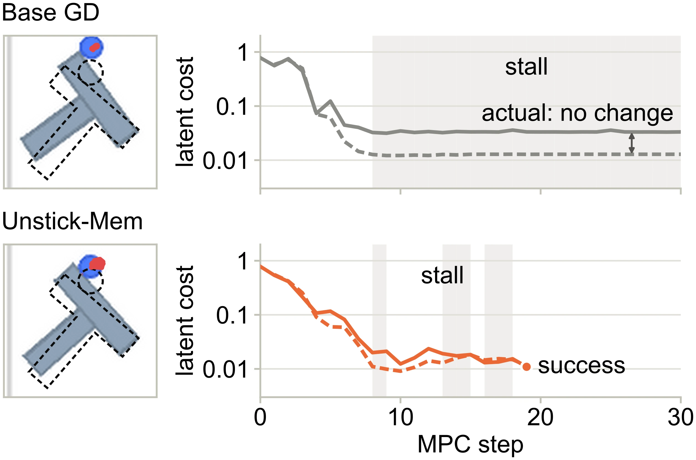
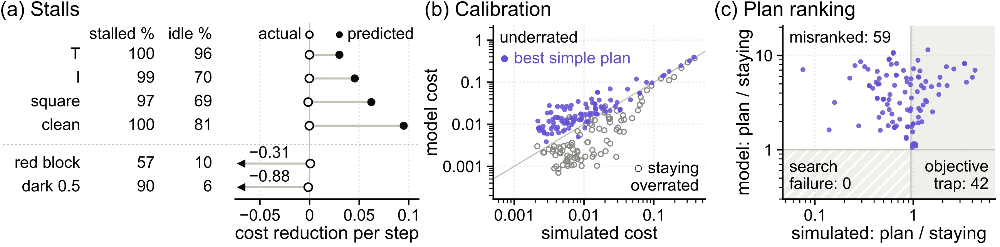
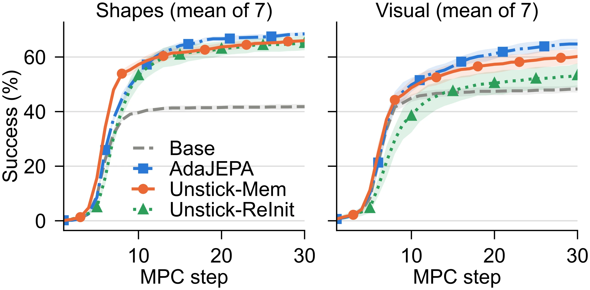
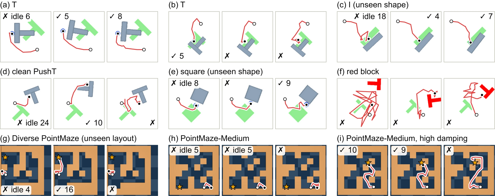

JEPA world-model planners fail on pushing tasks mostly by stalling: the object stays in place while the model predicts progress, and the warm-started planner returns nearly the same plan. Unstick breaks this fixed point without test-time weight updates.
Seoul National University

Joint-embedding predictive architecture (JEPA) world models plan from pixels with model predictive control, yet often fail on tasks their model should handle. Test-time adaptation attributes such failures to model error under distribution shift and updates the weights on the current episode, without checking this attribution against the planning loop itself. We follow the executed planning loop on pushing tasks. In most settings, with and without distribution shift, nearly all failures (at least 96%) are stalls, where the object stays in place while the model predicts progress. The warm-started gradient-descent (GD) planner then returns nearly the same plan, a fixed point where the agent mostly idles. We propose Unstick, which pairs on-policy fine-tuning before deployment with a fixed-weight loop breaker: a residual memory of the episode's prediction errors or random re-initialization at every replan. With GD, Unstick recovers most of the adaptation gain on pushing tasks with the memory, and with re-initialization most of it on shape shifts but much less on visual shifts. A large part of what limits these planners under GD is thus a fixed point of the planning loop, present with and without distribution shift, which a planner with fixed weights can break.
We follow the executed planning loop of the base gradient-descent (GD) planner, replaying executed actions in the simulator to recover true states.

On T, I, square and clean, at least 97% of the failures are stalls. During them the model predicts a cost reduction of 0.030–0.095 per executed chunk, while the actual progress is zero.
No analyzed stall is a search failure. On T, the model overrates staying in 98% of stalls and underrates the best simple plan.
Warm-started GD returns nearly the same plan, and the agent moves back and forth: net displacement below 0.3 of the path length for 89–99% of GD chunks, against 3% of expert chunks on T.
Fine-tuning before deployment corrects the model on the planner's own executions. At test time, a fixed-weight loop breaker removes the stall.
Before deployment, fine-tune the model on the base planner's own executions of separate episodes, because the planner visits states that offline data miss.
Store the model's one-step errors on executed chunks and add them back to predictions near them, so a re-proposed stay-in-place chunk is predicted to stay in place.
Start every replan from a random plan instead of the warm start, so the same state no longer yields the same plan.
With GD, Unstick recovers most of the gain of test-time adaptation on pushing tasks with the memory, and with re-initialization most of it on shape shifts but much less on visual shifts.
| Success (%) ↑ | Seen shapes | Unseen shapes | |||||
|---|---|---|---|---|---|---|---|
| Method | T | L | Z | cross | I | small T | square |
| Base | 53.3±6.8 | 50.7±6.6 | 44.7±5.0 | 52.0±4.3 | 26.0±5.7 | 42.7±5.2 | 23.3±3.4 |
| + Unstick-Mem | 78.7±5.7 | 82.0±4.3 | 78.7±3.8 | 77.3±3.8 | 40.7±1.9 | 68.7±3.8 | 36.0±3.3 |
| + Unstick-ReInit | 76.0±4.3 | 71.3±2.5 | 76.7±1.9 | 71.3±5.7 | 50.0±11.8 | 68.0±5.9 | 42.7±0.9 |
| + straight chunks | 55.3±0.9 | 49.3±1.9 | 45.3±2.5 | 48.0±4.9 | 22.0±4.3 | 42.0±14.2 | 22.7±3.8 |
| + uniform weights | 60.0±3.3 | 57.3±4.1 | 56.7±2.5 | 64.7±6.6 | 33.3±8.1 | 58.0±5.9 | 20.7±0.9 |
| AdaJEPA | 84.7±5.7 | 86.7±3.8 | 79.3±5.0 | 78.7±1.9 | 48.0±8.6 | 65.3±3.4 | 36.7±2.5 |
Success on seen and unseen shapes (PushObj). GD planner, success (%). Mean ± SD over three evaluation seeds of 50 episodes. Bold, underline: best, second best without test-time weight updates; ties share marks. Straight chunks: each chunk's actions replaced by their mean; uniform weights: uniform weights on all predicted frames of the objective. AdaJEPA: test-time weight updates.
| Success (%) ↑ | No shift | Visual shifts | |||||
|---|---|---|---|---|---|---|---|
| Method | clean | blur | snp | dark 0.9 | red agent | red goal | red block |
| Base | 64.0±1.6 | 56.0±3.3 | 64.7±1.9 | 63.3±1.9 | 44.0±9.1 | 34.7±5.2 | 11.3±2.5 |
| + Unstick-Mem | 80.7±0.9 | 76.7±2.5 | 74.0±1.6 | 78.0±4.3 | 62.0±5.9 | 38.7±5.0 | 11.3±2.5 |
| + Unstick-ReInit | 69.3±6.6 | 59.3±2.5 | 68.7±6.6 | 68.0±5.9 | 58.7±11.8 | 40.0±5.9 | 9.3±0.9 |
| + straight chunks | 57.3±3.4 | 40.0±4.3 | 59.3±5.2 | 55.3±9.8 | 47.3±5.2 | 36.0±3.3 | 12.0±4.9 |
| + uniform weights | 66.7±2.5 | 66.0±1.6 | 69.3±0.9 | 66.7±5.0 | 56.0±4.9 | 44.0±7.1 | 9.3±1.9 |
| AdaJEPA | 84.0±1.6 | 86.0±1.6 | 82.7±3.4 | 83.3±1.9 | 59.3±6.2 | 49.3±5.2 | 8.7±2.5 |
Success under visual shifts (PushT). snp: salt-and-pepper noise; dark: darkening level. GD planner, success (%). Mean ± SD over three evaluation seeds of 50 episodes. Bold, underline: best, second best without test-time weight updates; ties share marks. Straight chunks: each chunk's actions replaced by their mean; uniform weights: uniform weights on all predicted frames of the objective. AdaJEPA: test-time weight updates.

Failure cases that neither remedy fixes trace to an encoder that discards a task variable, as under the red block and darkening at level 0.5, or to local minima of the planning objective, as in PointMaze-Medium, rather than to the planner.
JEPA planners should be evaluated in closed loop, by checking whether the state moves and whether the plan repeats, before their failures are attributed to distribution shift. Test-time adaptation should be compared with remedies that keep the weights fixed.

@article{lee2026stuck,
title = {Stuck in Place: Stall Diagnosis and Remedies for {JEPA} Planners},
author = {Lee, Junhyeok and Lee, Dongheon and Choi, Kyu Sung},
journal = {arXiv preprint arXiv:2611.25415},
year = {2026}
}